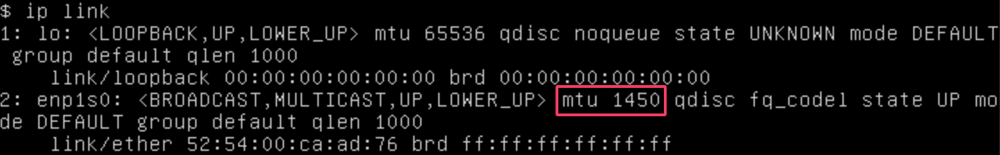
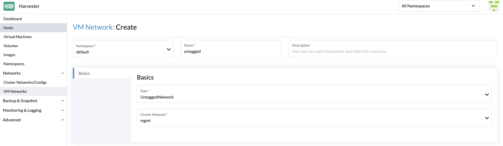
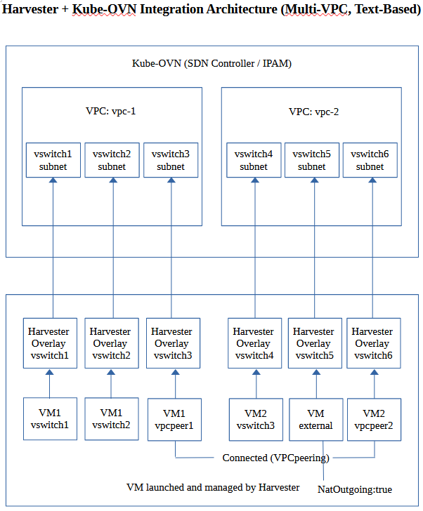

Réseau VM
SUSE Virtualization fournit trois types de réseaux pour les machines virtuelles (VM), notamment :
-
Réseau de gestion
-
Réseau VLAN
-
Réseau non étiqueté
Le réseau de gestion est généralement utilisé pour les VM dont le trafic ne circule qu’à l’intérieur du cluster. Si vos VM doivent se connecter au réseau externe, utilisez le réseau VLAN ou le réseau non étiqueté.
SUSE Virtualization a également introduit le réseau de stockage pour séparer le trafic de stockage des autres charges de travail à l’échelle du cluster. Veuillez vous référer au document sur le réseau de stockage pour plus de détails.
Réseau de gestion
SUSE Virtualization utilise Canal comme son réseau de gestion par défaut. C’est un réseau intégré qui peut être utilisé directement depuis le cluster. Par défaut, l’IP de gestion d’une VM ne peut être accessible qu’au sein des nœuds du cluster, et l’IP de gestion changera après le redémarrage de la VM. C’est un comportement atypique qu’il faut noter puisque les IP des VM sont censées rester inchangées après un redémarrage.
Cependant, vous pouvez tirer parti de l’objet de service Kubernetes service object pour créer une IP stable pour vos VM avec le réseau de gestion.
Comment utiliser le réseau de gestion
Puisque le réseau de gestion est intégré et ne nécessite pas d’opérations supplémentaires, vous pouvez l’ajouter directement lors de la configuration du réseau de la VM.

|
 Si l’une de vos charges de travail implique la transmission de trafic réseau, vous devez spécifier la valeur MTU appropriée pour les interfaces réseau de VM et les ponts concernés. |
Réseau VLAN
Le contrôleur réseau utilise les plugins CNI multus et bridge pour mettre en œuvre son réseau VLAN de pont L2 personnalisé. Il aide à connecter vos VM à l’interface réseau de l’hôte et peut être accessible depuis les réseaux internes et externes en utilisant le commutateur physique.
Créer un réseau de VM
-
Allez à Réseaux → Réseaux de VM.
-
Sélectionnez Créer.
-
Configurez les paramètres suivants :
-
Espace de noms
-
Nom
-
description (facultative)
-
-
Dans l’onglet Généralités, configurez les paramètres suivants :
-
Type : Sélectionnez RéseauL2Vlan.
-
Mode : Sélectionnez Accès.
-
ID de VLAN
-
Réseau de cluster
Les réseaux de machines virtuelles héritent de la MTU de la configuration réseau du réseau de cluster associé. Cela garantit que les machines virtuelles bénéficient des meilleures performances matérielles possibles. Vous ne pouvez pas définir une MTU différente pour les réseaux de machines virtuelles.
Lorsque vous changez la MTU sur les NIC physiques de la liaison montante du réseau de grappe, les nouveaux réseaux de machines virtuelles créés héritent automatiquement de la nouvelle MTU. Les réseaux de machines virtuelles existants sont également mis à jour automatiquement. Pour plus d’informations, voir Changer la MTU d’une configuration réseau avec un réseau de stockage attaché et Changer la MTU d’une configuration réseau sans réseau de stockage attaché.
Le SUSE Virtualization webhook ne vous permet pas de changer directement la MTU sur les réseaux de VM.
-
-
Dans l’onglet Route, sélectionnez une option puis spécifiez les adresses IPv4 associées.
-
Auto(DHCP): Le contrôleur de réseau récupère les adresses CIDR et de passerelle du serveur DHCP. Vous pouvez spécifier l’adresse du serveur DHCP.

-
Manuel : Spécifiez les adresses CIDR et de passerelle.

SUSE Virtualization utilise les informations pour vérifier que tous les nœuds peuvent accéder au réseau VM que vous créez. Si tel est le cas, la colonne Connectivité réseau sur l’écran Réseaux VM indique que le réseau est actif. Sinon, l’écran indique qu’une erreur s’est produite.
-
Créez une VM avec un réseau VLAN.
Vous pouvez maintenant créer une nouvelle VM en utilisant le réseau VLAN configuré ci-dessus :
-
Cliquez sur le bouton Créer sur la page Machines Virtuelles.
-
Spécifiez les paramètres requis et cliquez sur l’onglet Réseaux.
-
Configurez soit le réseau par défaut pour qu’il soit un réseau VLAN, soit sélectionnez un réseau supplémentaire à ajouter.
Réseau non étiqueté
Comme on le sait, le trafic sous un réseau VLAN a une étiquette d’ID VLAN et nous pouvons utiliser le réseau VLAN avec PVID (par défaut 1) pour communiquer avec tout trafic normal non étiqueté. Cependant, certains appareils réseau peuvent ne pas s’attendre à recevoir un ID VLAN étiqueté explicitement qui correspond au VLAN natif sur le commutateur auquel appartient la liaison montante. C’est la raison pour laquelle nous fournissons le réseau non étiqueté.
Comment utiliser le réseau non étiqueté
L’utilisation du réseau non étiqueté est similaire à réseau VLAN.
Pour créer un nouveau réseau non étiqueté, allez à la page Réseaux > Réseaux VM et cliquez sur le bouton Créer. Vous devez spécifier le nom, sélectionner le type Untagged Network et choisir le réseau de cluster.

|
SUSE Virtualization prend en charge la mise à jour et la suppression des réseaux VM. Assurez-vous d’interrompre toutes les VM concernées avant de mettre à jour ou de supprimer des réseaux VM. |
Réseau de tronc VLAN
-
Allez à Réseaux → Réseaux de VM.
-
Sélectionnez Créer.
-
Configurez les paramètres suivants :
-
Espace de noms
-
Nom
-
description (facultative)
-
-
Dans l’onglet Généralités, configurez les paramètres suivants :
-
Type : Sélectionnez RéseauL2Vlan.
-
Mode : Sélectionnez Trunk.
-
ID VLAN minimum : Spécifiez l’ID VLAN de départ d’une plage.
-
ID VLAN maximum : Spécifiez l’ID VLAN de fin d’une plage.
-
Réseau de cluster : Sélectionnez le réseau de cluster associé.
Vous pouvez spécifier plusieurs plages d’ID VLAN qui se chevauchent.
-
Lorsqu’une machine virtuelle est attachée à un réseau de tronc VLAN, le système d’exploitation invité et les applications peuvent envoyer et recevoir des paquets étiquetés avec n’importe quel ID VLAN dans la plage spécifiée.
|
Vous ne pouvez changer le type de réseau que lorsque toutes les machines virtuelles attachées sont arrêtées. Lorsque vous changez le type de réseau de |
Réseau de superposition (Expérimental)
Le contrôleur de réseau utilise Kube-OVN pour créer un réseau virtualisé basé sur OVN qui prend en charge des capacités SDN avancées telles que les clouds privés virtuels (VPC) et les sous-réseaux pour les charges de travail des machines virtuelles.
Un réseau de superposition représente un commutateur virtuel de couche 2 qui encapsule et transfère le trafic entre les machines virtuelles. Ce réseau peut être lié au sous-réseau créé dans le VPC afin que les machines virtuelles puissent accéder au réseau virtualisé interne et également atteindre le réseau externe. Cependant, les mêmes machines virtuelles ne peuvent pas être accessibles par des réseaux externes tels que les VLAN et les réseaux non étiquetés en raison des limitations actuelles du VPC.

Création d’un réseau de superposition
-
Allez dans Réseaux → Réseaux de machines virtuelles, puis cliquez sur Créer.

-
Sur l’écran Réseau de machines virtuelles : Créer, spécifiez un nom pour le réseau.
-
Dans l’onglet Généralités, sélectionnez
OverlayNetworkcomme type de réseau. -
Cliquez sur Create.
Limitations des réseaux superposés
L’implémentation des réseaux superposés dans SUSE Virtualization v1.6 présente les limitations suivantes :
-
Les réseaux superposés soutenus par Kube-OVN ne peuvent être créés que sur
mgmt(le réseau de gestion intégré). -
Par défaut, les paramètres
enableDHCPetdhcpV4Optionsne sont pas configurés, donc aucune route par défaut n’existe sur les machines virtuelles attachées à un sous-réseau superposé Kube-OVN. Les tentatives d’accès à des destinations externes échouent jusqu’à ce que la route par défaut soit correctement configurée sur le système d’exploitation invité. Vous pouvez effectuer l’une des solutions suivantes :-
Ajoutez manuellement l’adresse IP de la passerelle du sous-réseau comme route par défaut de la machine virtuelle.
-
Utilisez le lien
managedTap: Modifiez la configuration YAML du sous-réseau attaché et vérifiez que le champ.spec.enableDHCPest défini surtrue. Ensuite, modifiez la configuration YAML de la machine virtuelle et modifiez la définition de l’interface pour utiliser le binding.interfaces: - binding: name: managedtap model: virtio name: default
-
-
Les équilibreurs de charge "natifs" Kube-OVN ne sont pas encore intégrés car cela nécessite des changements fondamentaux dans le code en amont. Kube-OVN fonctionne actuellement comme le principal plug-in CNI pour chaque cluster.
-
Le réseau sous-jacent n’est toujours pas disponible. Par conséquent, vous ne pouvez pas associer directement un sous-réseau à un réseau physique, et les hôtes externes ne peuvent pas atteindre les machines virtuelles qui se trouvent sur un sous-réseau superposé.
-
Le champ
natOutgoingest défini surfalsepar défaut dans tous les sous-réseaux (dans les VPC par défaut et personnalisés). Seuls les sous-réseaux appartenant au VPC par défaut peuvent accéder à Internet après avoir changé la valeur entrueet configuré la route par défaut. Les sous-réseaux créés dans des VPC personnalisés ne peuvent pas accéder à Internet sansVpcNatGatewaysupport. -
L’adresse IP statique dans cloud-init semble être ignorée pour les NIC de superposition. En pratique, l’adresse IP statique fonctionne uniquement si elle correspond à l’adresse exacte réservée par Kube-OVN pour la machine virtuelle. Toute autre valeur rompt la connectivité.
-
Lorsque plusieurs NIC sont attachés et que le NIC de superposition n’est pas l’interface principale, vous devez initialiser manuellement le NIC de superposition dans le système d’exploitation invité (configuration de l’interface IP) et exécuter la commande du client DHCP (dhclient) pour obtenir l’adresse IP du NIC.
-
Le peering ne fonctionne qu’entre des VPC personnalisés. Les tentatives d’établir une connexion de peering entre le VPC par défaut et un VPC personnalisé échoueront.
-
Les équilibreurs de charge de machines virtuelles, fournis par le SUSE Virtualization équilibreur de charge, ne sont pas compatibles avec les réseaux de superposition Kube-OVN. Vous ne pouvez utiliser ces équilibreurs de charge qu’avec des réseaux VLAN.
-
-
Les équilibreurs de charge de cluster ne fonctionnent pas correctement avec les clusters invités sur les réseaux de superposition Kube-OVN. Les problèmes de compatibilité sont causés par les éléments suivants :
-
PoolIPAM : Kube-OVN n’est pas conscient que les adresses IP frontales de l’équilibreur de charge sont allouées à partir de pools gérés par le SUSE Virtualization équilibreur de charge. Cela peut entraîner des conflits d’adresses IP. -
DHCPIPAM : L’allocation dynamique d’adresses IP ne fonctionne pas même lorsque le service DHCP est activé pour le sous-réseau Kube-OVN. L’enregistrement de bail est géré sur le plan de contrôle par Kube-OVN. Des améliorations d’intégration sont nécessaires pour permettre aux composants affectés de fonctionner correctement ensemble.
-
-
L’intégration Rancher (en particulier, la création de clusters en aval utilisant le pilote de nœud Harvester) ne fonctionne que sur les réseaux de superposition Kube-OVN au sein du VPC par défaut. Pour garantir la création réussie d’un cluster, vous devez effectuer les actions suivantes :
-
Activez le service DHCP pour le réseau de superposition. Vous devez définir une passerelle par défaut valide.
-
Mettre à jour manuellement la spécification de la machine virtuelle sous-jacente pour adapter l’interface de liaison
managedTappour le cluster en aval pendant la période de provisionnement du cluster.
-